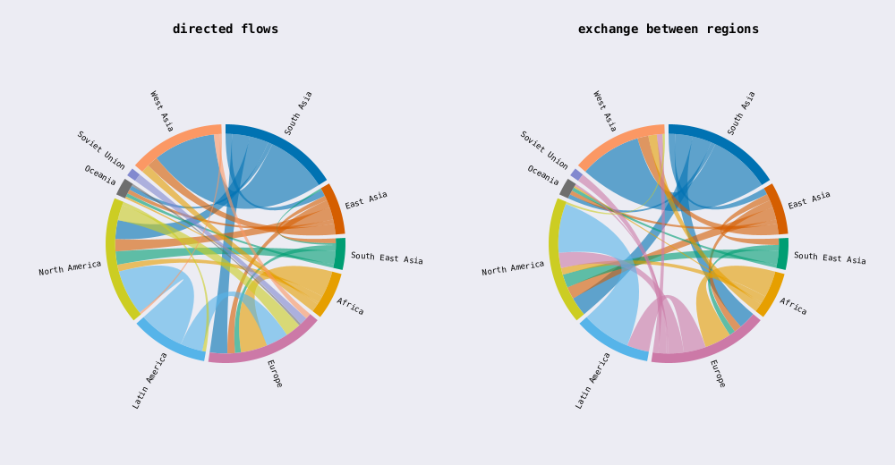
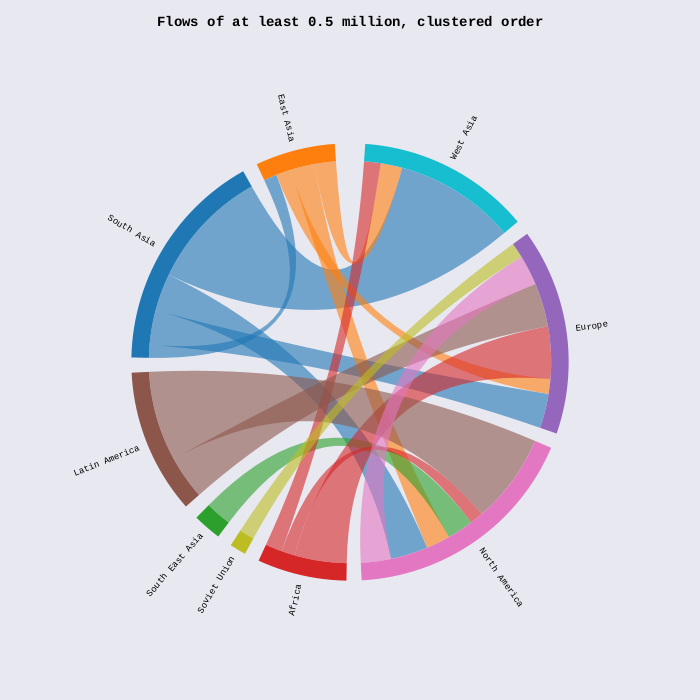
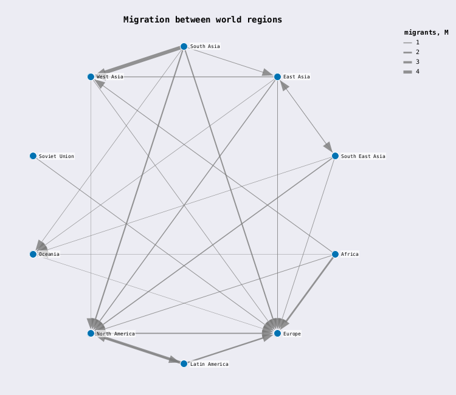
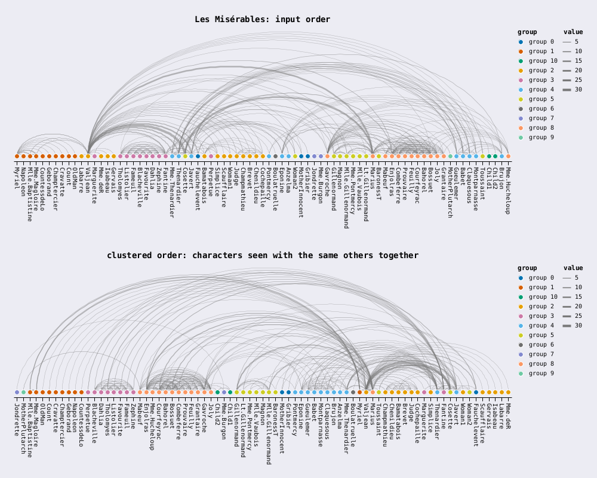
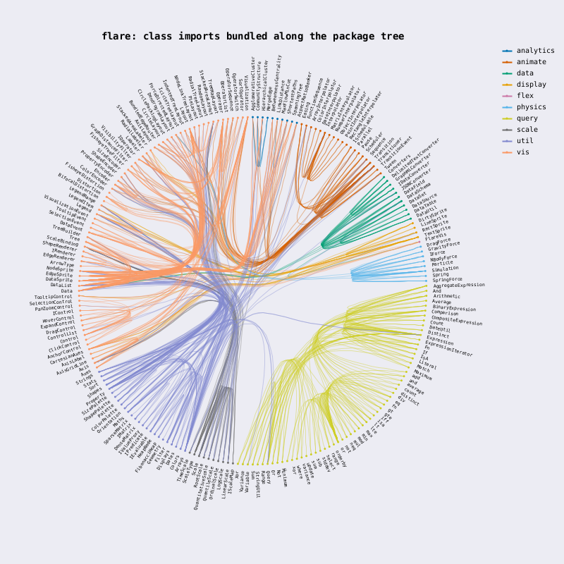
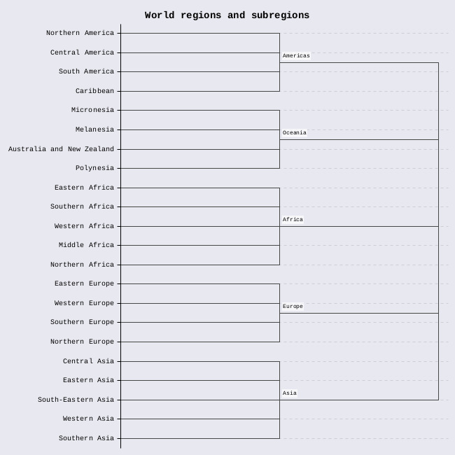
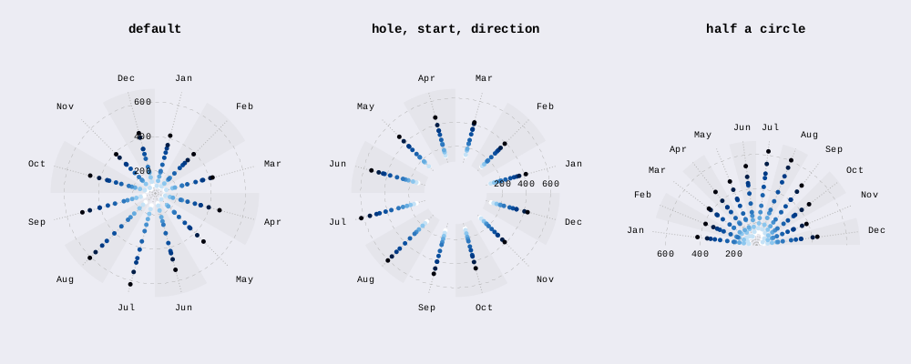
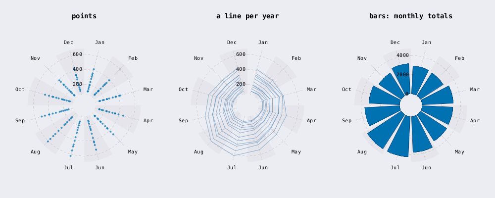
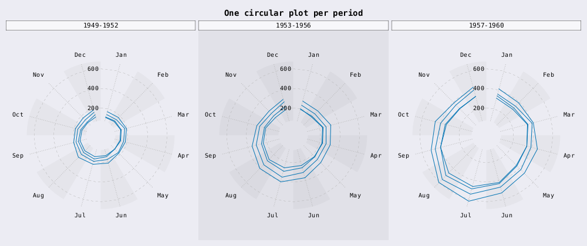

35 Flow
Connections and flows between entities: chord diagrams, networks, sankey and alluvial diagrams, bump charts, arc diagrams, hierarchical edge bundling, dendrograms, clustered heatmaps, circular plots and flow sunbursts (the R Graph Gallery flow pages and data-to-viz). Every layout is a function returning rows, drawn by ordinary charts; the plot/... builders return plain plot maps.
Not here: interactivity, multi-track circular plots, gradient ribbons and links, cyclic sankeys, crossing minimization beyond clustering, arcs below the line and label repel.
(ns use-cases.flow
(:require [clojure.string :as str]
[fastmath.core :as m]
[fastmath.ml.clustering :as cl]
[fastmath.random :as r]
[fastmath.stats :as stats]
[cljplot2.chart :as chart]
[cljplot2.core :as plot]
[cljplot2.data.graph :as graph]
[cljplot2.data.levels :as levels]
[cljplot2.data.tree :as tree]
[notebook-utils :as nu]))(def migration
"Flows between regions without the zeros and the diagonal; the file spells some names with dots."
(let [region #(str/replace % "." " ")]
(vec (for [{:keys [from to value]} (nu/dataset :migration)
:when (and (pos? (double value)) (not= (region from) (region to)))]
{:from (region from) :to (region to) :value value}))))| from | to | value |
|---|---|---|
| South Asia | East Asia | 0.525881 |
| South East Asia | East Asia | 0.145264 |
| Africa | Europe | 2.107883 |
| East Asia | Europe | 0.601265 |
| Latin America | Europe | 1.762587 |
| North America | Europe | 1.215929 |
| Oceania | Europe | 0.17037 |
| South Asia | Europe | 1.390272 |
| South East Asia | Europe | 0.468762 |
| Soviet Union | Europe | 0.60923 |
| West Asia | Europe | 0.449623 |
| North America | Latin America | 0.276908 |
| Africa | North America | 0.540887 |
| East Asia | North America | 0.97306 |
| Latin America | North America | 3.627847 |
| South Asia | North America | 1.508008 |
| South East Asia | North America | 1.057904 |
| West Asia | North America | 0.169274 |
| Africa | Oceania | 0.155988 |
| East Asia | Oceania | 0.333608 |
| South Asia | Oceania | 0.34742 |
| South East Asia | Oceania | 0.278746 |
| East Asia | South East Asia | 0.380388 |
| Africa | West Asia | 0.673004 |
| East Asia | West Asia | 0.869311 |
| South Asia | West Asia | 4.902081 |
(def characters
(mapv (fn [{:keys [name group]}] {:id name :group (str "group " group)}) (nu/dataset :miserables-characters)))| id | group |
|---|---|
| Myriel | group 1 |
| Napoleon | group 1 |
| Mlle.Baptistine | group 1 |
| Mme.Magloire | group 1 |
| CountessdeLo | group 1 |
| Geborand | group 1 |
| Champtercier | group 1 |
| Cravatte | group 1 |
| Count | group 1 |
| OldMan | group 1 |
| Labarre | group 2 |
| Valjean | group 2 |
| Marguerite | group 3 |
| Mme.deR | group 2 |
| Isabeau | group 2 |
| Gervais | group 2 |
| Tholomyes | group 3 |
| Listolier | group 3 |
| Fameuil | group 3 |
| Blacheville | group 3 |
| Favourite | group 3 |
| Dahlia | group 3 |
| Zephine | group 3 |
| Fantine | group 3 |
| Mme.Thenardier | group 4 |
| Thenardier | group 4 |
| Cosette | group 5 |
| Javert | group 4 |
| Fauchelevent | group 0 |
| Bamatabois | group 2 |
| Perpetue | group 3 |
| Simplice | group 2 |
| Scaufflaire | group 2 |
| Woman1 | group 2 |
| Judge | group 2 |
| Champmathieu | group 2 |
| Brevet | group 2 |
| Chenildieu | group 2 |
| Cochepaille | group 2 |
| Pontmercy | group 4 |
| Boulatruelle | group 6 |
| Eponine | group 4 |
| Anzelma | group 4 |
| Woman2 | group 5 |
| MotherInnocent | group 0 |
| Gribier | group 0 |
| Jondrette | group 7 |
| Mme.Burgon | group 7 |
| Gavroche | group 8 |
| Gillenormand | group 5 |
| Magnon | group 5 |
| Mlle.Gillenormand | group 5 |
| Mme.Pontmercy | group 5 |
| Mlle.Vaubois | group 5 |
| Lt.Gillenormand | group 5 |
| Marius | group 8 |
| BaronessT | group 5 |
| Mabeuf | group 8 |
| Enjolras | group 8 |
| Combeferre | group 8 |
| Prouvaire | group 8 |
| Feuilly | group 8 |
| Courfeyrac | group 8 |
| Bahorel | group 8 |
| Bossuet | group 8 |
| Joly | group 8 |
| Grantaire | group 8 |
| MotherPlutarch | group 9 |
| Gueulemer | group 4 |
| Babet | group 4 |
| Claquesous | group 4 |
| Montparnasse | group 4 |
| Toussaint | group 5 |
| Child1 | group 10 |
| Child2 | group 10 |
| Brujon | group 4 |
| Mme.Hucheloup | group 8 |
(def co-occurrences (nu/dataset :miserables-links))| from | to | value |
|---|---|---|
| Napoleon | Myriel | 1 |
| Mlle.Baptistine | Myriel | 8 |
| Mme.Magloire | Myriel | 10 |
| Mme.Magloire | Mlle.Baptistine | 6 |
| CountessdeLo | Myriel | 1 |
| Geborand | Myriel | 1 |
| Champtercier | Myriel | 1 |
| Cravatte | Myriel | 1 |
| Count | Myriel | 2 |
| OldMan | Myriel | 1 |
| Valjean | Labarre | 1 |
| Valjean | Mme.Magloire | 3 |
| Valjean | Mlle.Baptistine | 3 |
| Valjean | Myriel | 5 |
| Marguerite | Valjean | 1 |
| Mme.deR | Valjean | 1 |
| Isabeau | Valjean | 1 |
| Gervais | Valjean | 1 |
| Listolier | Tholomyes | 4 |
| Fameuil | Tholomyes | 4 |
| Fameuil | Listolier | 4 |
| Blacheville | Tholomyes | 4 |
| Blacheville | Listolier | 4 |
| Blacheville | Fameuil | 4 |
| Favourite | Tholomyes | 3 |
| Favourite | Listolier | 3 |
| Favourite | Fameuil | 3 |
| Favourite | Blacheville | 4 |
| Dahlia | Tholomyes | 3 |
| Dahlia | Listolier | 3 |
| Dahlia | Fameuil | 3 |
| Dahlia | Blacheville | 3 |
| Dahlia | Favourite | 5 |
| Zephine | Tholomyes | 3 |
| Zephine | Listolier | 3 |
| Zephine | Fameuil | 3 |
| Zephine | Blacheville | 3 |
| Zephine | Favourite | 4 |
| Zephine | Dahlia | 4 |
| Fantine | Tholomyes | 3 |
| Fantine | Listolier | 3 |
| Fantine | Fameuil | 3 |
| Fantine | Blacheville | 3 |
| Fantine | Favourite | 4 |
| Fantine | Dahlia | 4 |
| Fantine | Zephine | 4 |
| Fantine | Marguerite | 2 |
| Fantine | Valjean | 9 |
| Mme.Thenardier | Fantine | 2 |
| Mme.Thenardier | Valjean | 7 |
| Thenardier | Mme.Thenardier | 13 |
| Thenardier | Fantine | 1 |
| Thenardier | Valjean | 12 |
| Cosette | Mme.Thenardier | 4 |
| Cosette | Valjean | 31 |
| Cosette | Tholomyes | 1 |
| Cosette | Thenardier | 1 |
| Javert | Valjean | 17 |
| Javert | Fantine | 5 |
| Javert | Thenardier | 5 |
| Javert | Mme.Thenardier | 1 |
| Javert | Cosette | 1 |
| Fauchelevent | Valjean | 8 |
| Fauchelevent | Javert | 1 |
| Bamatabois | Fantine | 1 |
| Bamatabois | Javert | 1 |
| Bamatabois | Valjean | 2 |
| Perpetue | Fantine | 1 |
| Simplice | Perpetue | 2 |
| Simplice | Valjean | 3 |
| Simplice | Fantine | 2 |
| Simplice | Javert | 1 |
| Scaufflaire | Valjean | 1 |
| Woman1 | Valjean | 2 |
| Woman1 | Javert | 1 |
| Judge | Valjean | 3 |
| Judge | Bamatabois | 2 |
| Champmathieu | Valjean | 3 |
| Champmathieu | Judge | 3 |
| Champmathieu | Bamatabois | 2 |
| Brevet | Judge | 2 |
| Brevet | Champmathieu | 2 |
| Brevet | Valjean | 2 |
| Brevet | Bamatabois | 1 |
| Chenildieu | Judge | 2 |
| Chenildieu | Champmathieu | 2 |
| Chenildieu | Brevet | 2 |
| Chenildieu | Valjean | 2 |
| Chenildieu | Bamatabois | 1 |
| Cochepaille | Judge | 2 |
| Cochepaille | Champmathieu | 2 |
| Cochepaille | Brevet | 2 |
| Cochepaille | Chenildieu | 2 |
| Cochepaille | Valjean | 2 |
| Cochepaille | Bamatabois | 1 |
| Pontmercy | Thenardier | 1 |
| Boulatruelle | Thenardier | 1 |
| Eponine | Mme.Thenardier | 2 |
| Eponine | Thenardier | 3 |
| Anzelma | Eponine | 2 |
| … | … | … |
(def mtcars (nu/dataset :mtcars))| model | mpg | cyl | disp | hp | drat | wt | qsec | vs | am | gear | carb |
|---|---|---|---|---|---|---|---|---|---|---|---|
| Mazda RX4 | 21 | 6 | 160 | 110 | 3.9 | 2.62 | 16.46 | 0 | 1 | 4 | 4 |
| Mazda RX4 Wag | 21 | 6 | 160 | 110 | 3.9 | 2.875 | 17.02 | 0 | 1 | 4 | 4 |
| Datsun 710 | 22.8 | 4 | 108 | 93 | 3.85 | 2.32 | 18.61 | 1 | 1 | 4 | 1 |
| Hornet 4 Drive | 21.4 | 6 | 258 | 110 | 3.08 | 3.215 | 19.44 | 1 | 0 | 3 | 1 |
| Hornet Sportabout | 18.7 | 8 | 360 | 175 | 3.15 | 3.44 | 17.02 | 0 | 0 | 3 | 2 |
| Valiant | 18.1 | 6 | 225 | 105 | 2.76 | 3.46 | 20.22 | 1 | 0 | 3 | 1 |
| Duster 360 | 14.3 | 8 | 360 | 245 | 3.21 | 3.57 | 15.84 | 0 | 0 | 3 | 4 |
| Merc 240D | 24.4 | 4 | 146.7 | 62 | 3.69 | 3.19 | 20 | 1 | 0 | 4 | 2 |
| Merc 230 | 22.8 | 4 | 140.8 | 95 | 3.92 | 3.15 | 22.9 | 1 | 0 | 4 | 2 |
| Merc 280 | 19.2 | 6 | 167.6 | 123 | 3.92 | 3.44 | 18.3 | 1 | 0 | 4 | 4 |
| Merc 280C | 17.8 | 6 | 167.6 | 123 | 3.92 | 3.44 | 18.9 | 1 | 0 | 4 | 4 |
| Merc 450SE | 16.4 | 8 | 275.8 | 180 | 3.07 | 4.07 | 17.4 | 0 | 0 | 3 | 3 |
| Merc 450SL | 17.3 | 8 | 275.8 | 180 | 3.07 | 3.73 | 17.6 | 0 | 0 | 3 | 3 |
| Merc 450SLC | 15.2 | 8 | 275.8 | 180 | 3.07 | 3.78 | 18 | 0 | 0 | 3 | 3 |
| Cadillac Fleetwood | 10.4 | 8 | 472 | 205 | 2.93 | 5.25 | 17.98 | 0 | 0 | 3 | 4 |
| Lincoln Continental | 10.4 | 8 | 460 | 215 | 3 | 5.424 | 17.82 | 0 | 0 | 3 | 4 |
| Chrysler Imperial | 14.7 | 8 | 440 | 230 | 3.23 | 5.345 | 17.42 | 0 | 0 | 3 | 4 |
| Fiat 128 | 32.4 | 4 | 78.7 | 66 | 4.08 | 2.2 | 19.47 | 1 | 1 | 4 | 1 |
| Honda Civic | 30.4 | 4 | 75.7 | 52 | 4.93 | 1.615 | 18.52 | 1 | 1 | 4 | 2 |
| Toyota Corolla | 33.9 | 4 | 71.1 | 65 | 4.22 | 1.835 | 19.9 | 1 | 1 | 4 | 1 |
| Toyota Corona | 21.5 | 4 | 120.1 | 97 | 3.7 | 2.465 | 20.01 | 1 | 0 | 3 | 1 |
| Dodge Challenger | 15.5 | 8 | 318 | 150 | 2.76 | 3.52 | 16.87 | 0 | 0 | 3 | 2 |
| AMC Javelin | 15.2 | 8 | 304 | 150 | 3.15 | 3.435 | 17.3 | 0 | 0 | 3 | 2 |
| Camaro Z28 | 13.3 | 8 | 350 | 245 | 3.73 | 3.84 | 15.41 | 0 | 0 | 3 | 4 |
| Pontiac Firebird | 19.2 | 8 | 400 | 175 | 3.08 | 3.845 | 17.05 | 0 | 0 | 3 | 2 |
| Fiat X1-9 | 27.3 | 4 | 79 | 66 | 4.08 | 1.935 | 18.9 | 1 | 1 | 4 | 1 |
| Porsche 914-2 | 26 | 4 | 120.3 | 91 | 4.43 | 2.14 | 16.7 | 0 | 1 | 5 | 2 |
| Lotus Europa | 30.4 | 4 | 95.1 | 113 | 3.77 | 1.513 | 16.9 | 1 | 1 | 5 | 2 |
| Ford Pantera L | 15.8 | 8 | 351 | 264 | 4.22 | 3.17 | 14.5 | 0 | 1 | 5 | 4 |
| Ferrari Dino | 19.7 | 6 | 145 | 175 | 3.62 | 2.77 | 15.5 | 0 | 1 | 5 | 6 |
| Maserati Bora | 15 | 8 | 301 | 335 | 3.54 | 3.57 | 14.6 | 0 | 1 | 5 | 8 |
| Volvo 142E | 21.4 | 4 | 121 | 109 | 4.11 | 2.78 | 18.6 | 1 | 1 | 4 | 2 |
(def mtcars-variables [:mpg :cyl :disp :hp :drat :wt :qsec :vs :am :gear :carb])(def standardized
"mtcars columns as z-scores, one row vector per car."
(apply mapv vector (map (fn [k] (stats/standardize (map k mtcars))) mtcars-variables)))| value |
|---|
| [0.1508848246476567 -0.10498780857523934 -0.5706198186679038 -0.5350928397302175 0.5675136853763388 -0.6103995674815352 -0.7771651454544218 -0.868027777333319 1.1899014180239407 0.4235541856104696 0.7352030810086251] |
| [0.1508848246476567 -0.10498780857523934 -0.5706198186679038 -0.5350928397302175 0.5675136853763388 -0.3497852691009719 -0.46378082037469126 -0.868027777333319 1.1899014180239407 0.4235541856104696 0.7352030810086251] |
| [0.4495434466306472 -1.2248577667111258 -0.9901820908889244 -0.7830404588215618 0.4739995868591257 -0.9170046243998455 0.42600681690525993 1.1160357137142674 1.1899014180239407 0.4235541856104696 -1.1221520710131645] |
| [0.2172534073105432 -0.10498780857523934 0.22009369436401968 -0.5350928397302175 -0.9661175303059616 -0.002299537926887412 0.8904871558627198 1.1160357137142674 -0.8141430754900646 -0.9318192083430331 -1.1221520710131645] |
| [-0.2307345256639422 1.014882149560647 1.0430812283360218 0.41294217444256986 -0.8351977923818631 0.22765425476184517 -0.46378082037469126 -0.868027777333319 -0.8141430754900646 -0.9318192083430331 -0.5030336870059013] |
| [-0.330287399658272 -0.10498780857523934 -0.046166978391628026 -0.6080186100512011 -1.5646077608161282 0.2480945918897325 1.326986751509487 1.1160357137142674 -0.8141430754900646 -0.9318192083430331 -1.1221520710131645] |
| [-0.9607889349556962 1.014882149560647 1.0430812283360218 1.4339029589363408 -0.7229808741612068 0.36051644609311273 -1.124126362506982 -0.868027777333319 -0.8141430754900646 -0.9318192083430331 0.7352030810086251] |
| [0.7150177772821938 -1.2248577667111258 -0.6779309382936649 -1.2351802348116603 0.17475447160404234 -0.027849959336746485 1.2038714809424504 1.1160357137142674 -0.8141430754900646 0.4235541856104696 -0.5030336870059013] |
| [0.4495434466306472 -1.2248577667111258 -0.7255351191802806 -0.7538701506931683 0.6049193247832242 -0.06873063359252118 2.8267545929624864 1.1160357137142674 -0.8141430754900646 0.4235541856104696 -0.5030336870059013] |
| [-0.14777379733533377 -0.10498780857523934 -0.5092991788817547 -0.34548583689566 0.6049193247832242 0.22765425476184517 0.2525262083789808 1.1160357137142674 -0.8141430754900646 0.4235541856104696 0.7352030810086251] |
| [-0.38006383665543714 -0.10498780857523934 -0.5092991788817547 -0.34548583689566 0.6049193247832242 0.22765425476184517 0.5882951281072631 1.1160357137142674 -0.8141430754900646 0.4235541856104696 0.7352030810086251] |
| [-0.6123538759755411 1.014882149560647 0.36371308754736914 0.4858679447635535 -0.9848203500094047 0.8715248742902965 -0.25112717121344563 -0.868027777333319 -0.8141430754900646 -0.9318192083430331 0.11608469700136186] |
| [-0.4630245649840456 1.014882149560647 0.36371308754736914 0.4858679447635535 -0.9848203500094047 0.5240391431162115 -0.13920419797068284 -0.868027777333319 -0.8141430754900646 -0.9318192083430331 0.11608469700136186] |
| [-0.8114596239642012 1.014882149560647 0.36371308754736914 0.4858679447635535 -0.9848203500094047 0.5751399859359296 0.08464174851483869 -0.868027777333319 -0.8141430754900646 -0.9318192083430331 0.11608469700136186] |
| [-1.607882615918842 1.014882149560647 1.94675381465822 0.8504967963684716 -1.2466598258576018 2.077504764835649 0.07344945119056281 -0.868027777333319 -0.8141430754900646 -0.9318192083430331 0.7352030810086251] |
| [-1.607882615918842 1.014882149560647 1.8499317518379845 0.996348337010439 -1.1157400879335033 2.255335697848269 -0.016088927403646203 -0.868027777333319 -0.8141430754900646 -0.9318192083430331 0.7352030810086251] |
| [-0.8944203522928097 1.014882149560647 1.688561647137592 1.2151256479733898 -0.6855752347543214 2.1745963661931134 -0.23993487388916773 -0.868027777333319 -0.8141430754900646 -0.9318192083430331 0.7352030810086251] |
| [2.0423894305399286 -1.2248577667111258 -1.2265892942749996 -1.1768396185548735 0.9041644400383075 -1.0396466471671693 0.9072756018491326 1.1160357137142674 1.1899014180239407 0.4235541856104696 -1.1221520710131645] |
| [1.710546517225495 -1.2248577667111258 -1.2507948099800585 -1.3810317754536277 2.4939041148309355 -1.6375265081578738 0.37564147894601746 1.1160357137142674 1.1899014180239407 0.4235541856104696 -0.5030336870059013] |
| [2.291271615525754 -1.2248577667111258 -1.2879099340611488 -1.19142477261907 1.1660039158865045 -1.412682799751113 1.1479099943210689 1.1160357137142674 1.1899014180239407 0.4235541856104696 -1.1221520710131645] |
| [0.23384555297626514 -1.2248577667111258 -0.892553177545187 -0.7246998425647749 0.19345729130748546 -0.7688121802226624 1.2094676296045892 1.1160357137142674 -0.8141430754900646 -0.9318192083430331 -1.1221520710131645] |
| [-0.7616831869670361 1.014882149560647 0.7042040084651974 0.04831332283765166 -1.5646077608161282 0.30941560327339457 -0.5477230503067614 -0.868027777333319 -0.8141430754900646 -0.9318192083430331 -0.5030336870059013] |
| [-0.8114596239642012 1.014882149560647 0.5912449351749226 0.04831332283765166 -0.8351977923818631 0.22254417047987343 -0.307088657834825 -0.868027777333319 -0.8141430754900646 -0.9318192083430331 -0.5030336870059013] |
| [-1.126710391612913 1.014882149560647 0.9623961759858254 1.4339029589363408 0.24956575041781318 0.6364609973195917 -1.3647607549789182 -0.868027777333319 -0.8141430754900646 -0.9318192083430331 0.7352030810086251] |
| [-0.14777379733533377 1.014882149560647 1.3658214377368068 0.41294217444256986 -0.9661175303059616 0.6415710816015638 -0.44699237438827644 -0.868027777333319 -0.8141430754900646 -0.9318192083430331 -0.5030336870059013] |
| [1.196190001588123 -1.2248577667111258 -1.2241687427044936 -1.1768396185548735 0.9041644400383075 -1.3104811141116763 0.5882951281072631 1.1160357137142674 1.1899014180239407 0.4235541856104696 -1.1221520710131645] |
| [0.9804921079337411 -1.2248577667111258 -0.8909394764981831 -0.8122107669499553 1.5587631296588011 -1.1009676585508312 -0.6428575775631092 -0.868027777333319 1.1899014180239407 1.7789275795639723 -0.5030336870059013] |
| [1.710546517225495 -1.2248577667111258 -1.0942658084206778 -0.49133737753762724 0.324377029231584 -1.7417722275100993 -0.5309346043203486 1.1160357137142674 1.1899014180239407 1.7789275795639723 -0.5030336870059013] |
| [-0.7119067499698709 1.014882149560647 0.9704646812208451 1.7110208861560787 1.1660039158865045 -0.048290296464633835 -1.8740102832334817 -0.868027777333319 1.1899014180239407 1.7789275795639723 0.7352030810086251] |
| [-0.06481306900672534 -0.10498780857523934 -0.6916473971931982 0.41294217444256986 0.04383473367994381 -0.45709703902238036 -1.3143954170196759 -0.868027777333319 1.1899014180239407 1.7789275795639723 1.9734398490231515] |
| [-0.8446439152956445 1.014882149560647 0.5670394194698637 2.7465668247140465 -0.10578782394759785 0.36051644609311273 -1.8180487966121013 -0.868027777333319 1.1899014180239407 1.7789275795639723 3.211676617037678] |
| [0.2172534073105432 -1.2248577667111258 -0.8852915228336693 -0.5496779937944142 0.9602728991486361 -0.44687687045843694 0.420410668243123 1.1160357137142674 1.1899014180239407 0.4235541856104696 -0.5030336870059013] |
(def air-passengers (nu/dataset :air-passengers))| date | year | month | passengers |
|---|---|---|---|
| 1949-01-01 | 1949 | Jan | 112 |
| 1949-02-01 | 1949 | Feb | 118 |
| 1949-03-01 | 1949 | Mar | 132 |
| 1949-04-01 | 1949 | Apr | 129 |
| 1949-05-01 | 1949 | May | 121 |
| 1949-06-01 | 1949 | Jun | 135 |
| 1949-07-01 | 1949 | Jul | 148 |
| 1949-08-01 | 1949 | Aug | 148 |
| 1949-09-01 | 1949 | Sep | 136 |
| 1949-10-01 | 1949 | Oct | 119 |
| 1949-11-01 | 1949 | Nov | 104 |
| 1949-12-01 | 1949 | Dec | 118 |
| 1950-01-01 | 1950 | Jan | 115 |
| 1950-02-01 | 1950 | Feb | 126 |
| 1950-03-01 | 1950 | Mar | 141 |
| 1950-04-01 | 1950 | Apr | 135 |
| 1950-05-01 | 1950 | May | 125 |
| 1950-06-01 | 1950 | Jun | 149 |
| 1950-07-01 | 1950 | Jul | 170 |
| 1950-08-01 | 1950 | Aug | 170 |
| 1950-09-01 | 1950 | Sep | 158 |
| 1950-10-01 | 1950 | Oct | 133 |
| 1950-11-01 | 1950 | Nov | 114 |
| 1950-12-01 | 1950 | Dec | 140 |
| 1951-01-01 | 1951 | Jan | 145 |
| 1951-02-01 | 1951 | Feb | 150 |
| 1951-03-01 | 1951 | Mar | 178 |
| 1951-04-01 | 1951 | Apr | 163 |
| 1951-05-01 | 1951 | May | 172 |
| 1951-06-01 | 1951 | Jun | 178 |
| 1951-07-01 | 1951 | Jul | 199 |
| 1951-08-01 | 1951 | Aug | 199 |
| 1951-09-01 | 1951 | Sep | 184 |
| 1951-10-01 | 1951 | Oct | 162 |
| 1951-11-01 | 1951 | Nov | 146 |
| 1951-12-01 | 1951 | Dec | 166 |
| 1952-01-01 | 1952 | Jan | 171 |
| 1952-02-01 | 1952 | Feb | 180 |
| 1952-03-01 | 1952 | Mar | 193 |
| 1952-04-01 | 1952 | Apr | 181 |
| 1952-05-01 | 1952 | May | 183 |
| 1952-06-01 | 1952 | Jun | 218 |
| 1952-07-01 | 1952 | Jul | 230 |
| 1952-08-01 | 1952 | Aug | 242 |
| 1952-09-01 | 1952 | Sep | 209 |
| 1952-10-01 | 1952 | Oct | 191 |
| 1952-11-01 | 1952 | Nov | 172 |
| 1952-12-01 | 1952 | Dec | 194 |
| 1953-01-01 | 1953 | Jan | 196 |
| 1953-02-01 | 1953 | Feb | 196 |
| 1953-03-01 | 1953 | Mar | 236 |
| 1953-04-01 | 1953 | Apr | 235 |
| 1953-05-01 | 1953 | May | 229 |
| 1953-06-01 | 1953 | Jun | 243 |
| 1953-07-01 | 1953 | Jul | 264 |
| 1953-08-01 | 1953 | Aug | 272 |
| 1953-09-01 | 1953 | Sep | 237 |
| 1953-10-01 | 1953 | Oct | 211 |
| 1953-11-01 | 1953 | Nov | 180 |
| 1953-12-01 | 1953 | Dec | 201 |
| 1954-01-01 | 1954 | Jan | 204 |
| 1954-02-01 | 1954 | Feb | 188 |
| 1954-03-01 | 1954 | Mar | 235 |
| 1954-04-01 | 1954 | Apr | 227 |
| 1954-05-01 | 1954 | May | 234 |
| 1954-06-01 | 1954 | Jun | 264 |
| 1954-07-01 | 1954 | Jul | 302 |
| 1954-08-01 | 1954 | Aug | 293 |
| 1954-09-01 | 1954 | Sep | 259 |
| 1954-10-01 | 1954 | Oct | 229 |
| 1954-11-01 | 1954 | Nov | 203 |
| 1954-12-01 | 1954 | Dec | 229 |
| 1955-01-01 | 1955 | Jan | 242 |
| 1955-02-01 | 1955 | Feb | 233 |
| 1955-03-01 | 1955 | Mar | 267 |
| 1955-04-01 | 1955 | Apr | 269 |
| 1955-05-01 | 1955 | May | 270 |
| 1955-06-01 | 1955 | Jun | 315 |
| 1955-07-01 | 1955 | Jul | 364 |
| 1955-08-01 | 1955 | Aug | 347 |
| 1955-09-01 | 1955 | Sep | 312 |
| 1955-10-01 | 1955 | Oct | 274 |
| 1955-11-01 | 1955 | Nov | 237 |
| 1955-12-01 | 1955 | Dec | 278 |
| 1956-01-01 | 1956 | Jan | 284 |
| 1956-02-01 | 1956 | Feb | 277 |
| 1956-03-01 | 1956 | Mar | 317 |
| 1956-04-01 | 1956 | Apr | 313 |
| 1956-05-01 | 1956 | May | 318 |
| 1956-06-01 | 1956 | Jun | 374 |
| 1956-07-01 | 1956 | Jul | 413 |
| 1956-08-01 | 1956 | Aug | 405 |
| 1956-09-01 | 1956 | Sep | 355 |
| 1956-10-01 | 1956 | Oct | 306 |
| 1956-11-01 | 1956 | Nov | 271 |
| 1956-12-01 | 1956 | Dec | 306 |
| 1957-01-01 | 1957 | Jan | 315 |
| 1957-02-01 | 1957 | Feb | 301 |
| 1957-03-01 | 1957 | Mar | 356 |
| 1957-04-01 | 1957 | Apr | 348 |
| … | … | … | … |
35.1 Chord diagram
Flows between groups around a circle: a ring sector per group, sized by its flow, and a ribbon per link.
35.1.1 Chord diagram from an edge list
Migration between ten world regions: directed - a ribbon per flow, as wide as the flow at both ends, the sectors holding the flows out and in - and undirected, a ribbon per pair of regions, as wide as their exchange.
Source: R Graph Gallery - Chord diagram; data-to-viz - Chord diagram (1, 2). Data: Migration flows between world regions, data-to-viz example dataset 13_AdjacencyDirectedWeighted (long form; Yan Holtz, after Abel & Sander 2014); licence: MIT (data_to_viz repository).
(plot/render-image
(plot/arrange [(plot/chord migration {:directed true :min-value 0.1 :title "directed flows"})
(plot/chord migration {:min-value 0.1 :title "exchange between regions"})]
{:columns 2})
{:width 1000 :height 520})
35.1.2 Colours, gaps, order and weak links
:min-value drops the weak flows that clutter the middle, :gap-angle widens the gaps, :order :cluster puts regions with similar partners side by side, and the palette is a plot scale like any other.
Source: R Graph Gallery - Advanced chord diagram with circlize; data-to-viz - Chord diagram (1, 2). Data: Migration flows between world regions, data-to-viz example dataset 13_AdjacencyDirectedWeighted (long form; Yan Holtz, after Abel & Sander 2014); licence: MIT (data_to_viz repository).
(plot/render-image
(plot/chord migration {:directed true :min-value 0.5 :gap-angle 4 :order :cluster
:scales {:color {:range :category10}}
:title "Flows of at least 0.5 million, clustered order"})
{:width 700 :height 700})
35.2 Network
Nodes and the edges between them, placed by a layout; colour, size and width carry node and edge variables.
35.2.1 From an adjacency table
Co-authorships between researchers come as a table - a row per author, a column per author, 1 for a joint paper. The table isn’t square, so its cells become edge rows directly (graph/adjacency->edges reads square matrices, see the correlation network below); the force layout places them, seeded for a stable picture. Groups of authors without joint papers between them are laid out apart and packed in rows, the largest first.
Source: R Graph Gallery - Input formats for network charts; data-to-viz - Network (1, 2). Data: Co-authorships between researchers, data-to-viz example dataset 13_AdjacencyUndirectedUnweighted (Yan Holtz); licence: MIT (data_to_viz repository).
(def coauthor-edges
"One edge per co-author pair (the table lists some pairs both ways)."
(->> (nu/dataset :coauthors)
(mapcat (fn [{:keys [from] :as row}]
(for [[k v] (dissoc row :from) :when (= 1 v)] (vec (sort [from (name k)])))))
(remove (fn [[a b]] (= a b)))
(distinct)
(mapv (fn [[a b]] {:from a :to b}))))| from | to |
|---|---|
| A Armero | A Breil |
| A Armero | A Dereeper |
| A Armero | F De Lamotte |
| A Armero | FC Baurens |
| A Armero | G Droc |
| A Armero | S Bocs |
| A Bateman | D Durand |
| A Bateman | T Lengauer |
| A Bateman | UK Hinxton |
| A Bateman | Y Moreau |
| A Besnard | G Poux |
| A Besnard | P Leroy |
| A Besnard | P Roumet |
| A Besnard | V Viader |
| A Breil | A Dereeper |
| A Breil | F De Lamotte |
| A Breil | G Droc |
| A Cenci | C Guilhaumon |
| A Cenci | S Santoni |
| A Chifolleau | V Berry |
| A Criscuolo | C Scornavacca |
| A Criscuolo | EJP Douzery |
| A Criscuolo | PH Fabre |
| A Criscuolo | S Guillemot |
| A Dassouli | B Noel |
| A Dassouli | B Vacherie |
| A Dellagi | D Expert |
| A Dellagi | F Gosti |
| A Dereeper | G Droc |
| A Regnault | M Crampes |
| A Serra | D Pot |
| A Serra | N Chantret |
| AMA Chifolleau | JP Doyon |
| AMA Chifolleau | V Berry |
| B Boussau | JY Dutheil |
| B Duthil | J Montmain |
| B Duthil | MF Sy |
| B Duthil | P Augereau |
| B Martret | J Alassimone |
| B Noel | B Vacherie |
| B Roure | D Baurain |
| B Roure | F Delsuc |
| C Burgarella | M Ardisson |
| C Burgarella | V Viader |
| C Douady | EJPDNLH Philippe |
| B Martret | C Fizames |
| C Fizames | J Alassimone |
| C Fizames | L Marquès |
| C Guilhaumon | S Santoni |
| A Cenci | C Scornavacca |
| C Burgarella | C Scornavacca |
| C Guilhaumon | C Scornavacca |
| C Scornavacca | EJP Douzery |
| C Scornavacca | F Delsuc |
| C Scornavacca | GJ Szöllősi |
| C Scornavacca | J Dainat |
| C Scornavacca | J Romiguier |
| C Scornavacca | JP Doyon |
| C Scornavacca | K Belkhir |
| C Scornavacca | KY Gorbunov |
| C Scornavacca | M Ardisson |
| C Scornavacca | N Galtier |
| C Scornavacca | S Santoni |
| C Scornavacca | V Berry |
| C Scornavacca | V Daubin |
| C Scornavacca | V Lefort |
| C Scornavacca | V Viader |
| C Scornavacca | W Paprotny |
| CP Meyer | JT Boehm |
| CP Meyer | N Agudelo |
| CP Meyer | SC Mills |
| CW Kilpatrick | PD Jenkins |
| D Baurain | F Delsuc |
| D Expert | F Gosti |
| CW Kilpatrick | D Huchon |
| D Huchon | P Chevret |
| D Huchon | PD Jenkins |
| D Huchon | U Jordan |
| D Pot | N Chantret |
| A Dellagi | D Vile |
| D Expert | D Vile |
| D Vile | F Gosti |
| D Vile | MC SOULIE |
| B Roure | DMD Vienne |
| D Baurain | DMD Vienne |
| DMD Vienne | F Delsuc |
| E Bazin | K Belkhir |
| E Bazin | N Galtier |
| E Bazin | S Glémin |
| A Dassouli | E Cornillot |
| B Noel | E Cornillot |
| B Vacherie | E Cornillot |
| E Cornillot | K Hadj-Kaddour |
| B Boussau | E Figuet |
| E Figuet | EJP Douzery |
| E Figuet | JY Dutheil |
| E Figuet | N Galtier |
| C Scornavacca | E Jacox |
| B Boussau | EJP Douzery |
| EJP Douzery | F Delsuc |
| … | … |
(plot/render-image
(plot/network coauthor-edges {:rng (r/rng :mersenne 11) :node-style {:size 8}
:title (str (count coauthor-edges) " co-authorships")})
{:width 750 :height 700})
35.2.2 Layouts
The same graph on a circle and with the Fruchterman-Reingold force layout: groups of characters that appear together only come out of the force layout.
Source: R Graph Gallery - Network layouts; data-to-viz - Network (1, 2). Data: Les Misérables character co-occurrences, vega-datasets miserables.json (D. E. Knuth, The Stanford GraphBase, 1993); licence: Not specified (vega-datasets lists it as notspecified). Data: Les Misérables characters, vega-datasets miserables.json (D. E. Knuth, The Stanford GraphBase, 1993); licence: Not specified (vega-datasets lists it as notspecified).
(plot/render-image
(plot/arrange (vec (for [[layout title] [[:circle "circle layout"] [:force "force layout"]]]
(plot/network co-occurrences {:nodes characters :layout layout :rng (r/rng :mersenne 3)
:mapping {:color :group} :scales {:color {:legend false}}
:title title})))
{:columns 2})
{:width 1000 :height 500})
35.2.3 Node colour, size by degree
Nodes coloured by their group and sized by their number of links (:degree, computed with the graph); labels for the main characters. One size scale serves one variable, so edge widths (below, for migration flows) and node sizes don’t go together.
Source: R Graph Gallery - igraph plotting parameters, map a colour, node size by edges number (1, 2, 3). Data: Les Misérables character co-occurrences, vega-datasets miserables.json (D. E. Knuth, The Stanford GraphBase, 1993); licence: Not specified (vega-datasets lists it as notspecified). Data: Les Misérables characters, vega-datasets miserables.json (D. E. Knuth, The Stanford GraphBase, 1993); licence: Not specified (vega-datasets lists it as notspecified).
(plot/render-image
(plot/network co-occurrences {:nodes characters :rng (r/rng :mersenne 3)
:mapping {:color :group :size :degree}
:scales {:size {:title "links"}}
:labels #(when (>= (long (:degree %)) 10) (:id %))
:title "Les Misérables: characters appearing together"})
{:width 900 :height 750})
35.2.4 Correlation network
Variables linked when their correlation is strong (|r| > 0.7): the matrix becomes edges with graph/adjacency->edges, the weight is |r| and the colour its sign.
Source: R Graph Gallery - Correlation network with igraph. Data: Motor Trend car road tests (1974), R datasets package mtcars (Henderson & Velleman 1981); licence: Part of R (GPL-2 | GPL-3).
(def correlation-edges
(let [names (mapv name mtcars-variables)
r (stats/correlation-matrix (mapv (fn [k] (mapv k mtcars)) mtcars-variables))
strong (mapv (fn [row] (mapv #(if (> (m/abs (double %)) 0.7) % 0) row)) r)]
(mapv #(assoc % :r (:value %) :value (m/abs (double (:value %))))
(graph/adjacency->edges strong names {:whole-matrix false}))))| from | to | value | r |
|---|---|---|---|
| mpg | mpg | 1.0 | 1.0 |
| mpg | cyl | 0.8521619594266129 | -0.8521619594266129 |
| mpg | disp | 0.8475513792624786 | -0.8475513792624786 |
| mpg | hp | 0.7761683718265864 | -0.7761683718265864 |
| mpg | wt | 0.8676593765172276 | -0.8676593765172276 |
| cyl | cyl | 1.0 | 1.0 |
| cyl | disp | 0.9020328721469987 | 0.9020328721469987 |
| cyl | hp | 0.8324474527218193 | 0.8324474527218193 |
| cyl | wt | 0.7824957944632407 | 0.7824957944632407 |
| cyl | vs | 0.8108117960830052 | -0.8108117960830052 |
| disp | disp | 1.0 | 1.0 |
| disp | hp | 0.7909485863698064 | 0.7909485863698064 |
| disp | drat | 0.7102139271692701 | -0.7102139271692701 |
| disp | wt | 0.8879799220581379 | 0.8879799220581379 |
| disp | vs | 0.7104158907905997 | -0.7104158907905997 |
| hp | hp | 1.0 | 1.0 |
| hp | qsec | 0.7082233888619535 | -0.7082233888619535 |
| hp | vs | 0.7230967373524496 | -0.7230967373524496 |
| hp | carb | 0.7498124715491103 | 0.7498124715491103 |
| drat | drat | 1.0 | 1.0 |
| drat | wt | 0.7124406466973717 | -0.7124406466973717 |
| drat | am | 0.7127111272262697 | 0.7127111272262697 |
| wt | wt | 1.0 | 1.0 |
| qsec | qsec | 1.0 | 1.0 |
| qsec | vs | 0.7445354435262542 | 0.7445354435262542 |
| vs | vs | 1.0 | 1.0 |
| am | am | 1.0 | 1.0 |
| am | gear | 0.7940587602563435 | 0.7940587602563435 |
| gear | gear | 1.0 | 1.0 |
| carb | carb | 1.0 | 1.0 |
(plot/render-image
(plot/network correlation-edges {:nodes (mapv (fn [k] {:id (name k)}) mtcars-variables) :rng (r/rng :mersenne 5)
:labels true
:edge-mapping {:color #(if (pos? (double (:r %))) "positive" "negative")}
:scales {:color {:range {"positive" [33 102 172] "negative" [178 24 43]} :title "r"}}
:title "mtcars variables with |r| > 0.7"})
{:width 700 :height 600})
35.2.5 Directed, weighted edges
Migration flows as arrows ending at the target’s edge, edge widths from the flows’ size scale.
Source: data-to-viz - Network. Data: Migration flows between world regions, data-to-viz example dataset 13_AdjacencyDirectedWeighted (long form; Yan Holtz, after Abel & Sander 2014); licence: MIT (data_to_viz repository).
(plot/render-image
(plot/network migration {:directed true :layout :circle :labels true
:edge-mapping {:size :value}
:scales {:size {:range [0.5 6] :title "migrants, M"}}
:title "Migration between world regions"})
{:width 750 :height 650})
35.3 Sankey
Flows through stages: nodes in columns, as tall as their flow, bands between them as wide as the flow.
35.3.1 Sankey diagram, node and link colours
The UK energy flows of a 2050 scenario: sources on the left, uses on the right (:align :justify, the default), bands in their source’s colour; then every node as far left as it can go, bands in their target’s colour.
Source: R Graph Gallery - Sankey diagram with networkD3, custom colours; data-to-viz - Sankey (1, 2, 3). Data: UK energy flows in 2050 (a DECC scenario), networkD3 JSONdata/energy.json (the d3 sankey example; UK Department of Energy & Climate Change 2050 Calculator); licence: networkD3 is GPL-3; the data’s licence isn’t stated.
(def energy-flows (nu/dataset :energy))| from | to | value |
|---|---|---|
| Agricultural 'waste' | Bio-conversion | 124.729 |
| Bio-conversion | Liquid | 0.597 |
| Bio-conversion | Losses | 26.862 |
| Bio-conversion | Solid | 280.322 |
| Bio-conversion | Gas | 81.144 |
| Biofuel imports | Liquid | 35 |
| Biomass imports | Solid | 35 |
| Coal imports | Coal | 11.606 |
| Coal reserves | Coal | 63.965 |
| Coal | Solid | 75.571 |
| District heating | Industry | 10.639 |
| District heating | Heating and cooling - commercial | 22.505 |
| District heating | Heating and cooling - homes | 46.184 |
| Electricity grid | Over generation / exports | 104.453 |
| Electricity grid | Heating and cooling - homes | 113.726 |
| Electricity grid | H2 conversion | 27.14 |
| Electricity grid | Industry | 342.165 |
| Electricity grid | Road transport | 37.797 |
| Electricity grid | Agriculture | 4.412 |
| Electricity grid | Heating and cooling - commercial | 40.858 |
| Electricity grid | Losses | 56.691 |
| Electricity grid | Rail transport | 7.863 |
| Electricity grid | Lighting & appliances - commercial | 90.008 |
| Electricity grid | Lighting & appliances - homes | 93.494 |
| Gas imports | Ngas | 40.719 |
| Gas reserves | Ngas | 82.233 |
| Gas | Heating and cooling - commercial | 0.129 |
| Gas | Losses | 1.401 |
| Gas | Thermal generation | 151.891 |
| Gas | Agriculture | 2.096 |
| Gas | Industry | 48.58 |
| Geothermal | Electricity grid | 7.013 |
| H2 conversion | H2 | 20.897 |
| H2 conversion | Losses | 6.242 |
| H2 | Road transport | 20.897 |
| Hydro | Electricity grid | 6.995 |
| Liquid | Industry | 121.066 |
| Liquid | International shipping | 128.69 |
| Liquid | Road transport | 135.835 |
| Liquid | Domestic aviation | 14.458 |
| Liquid | International aviation | 206.267 |
| Liquid | Agriculture | 3.64 |
| Liquid | National navigation | 33.218 |
| Liquid | Rail transport | 4.413 |
| Marine algae | Bio-conversion | 4.375 |
| Ngas | Gas | 122.952 |
| Nuclear | Thermal generation | 839.978 |
| Oil imports | Oil | 504.287 |
| Oil reserves | Oil | 107.703 |
| Oil | Liquid | 611.99 |
| Other waste | Solid | 56.587 |
| Other waste | Bio-conversion | 77.81 |
| Pumped heat | Heating and cooling - homes | 193.026 |
| Pumped heat | Heating and cooling - commercial | 70.672 |
| Solar PV | Electricity grid | 59.901 |
| Solar Thermal | Heating and cooling - homes | 19.263 |
| Solar | Solar Thermal | 19.263 |
| Solar | Solar PV | 59.901 |
| Solid | Agriculture | 0.882 |
| Solid | Thermal generation | 400.12 |
| Solid | Industry | 46.477 |
| Thermal generation | Electricity grid | 525.531 |
| Thermal generation | Losses | 787.129 |
| Thermal generation | District heating | 79.329 |
| Tidal | Electricity grid | 9.452 |
| UK land based bioenergy | Bio-conversion | 182.01 |
| Wave | Electricity grid | 19.013 |
| Wind | Electricity grid | 289.366 |
(plot/render-image
(plot/sankey energy-flows {:title "UK energy flows in 2050 (TWh)"})
{:width 1000 :height 650})
(plot/render-image
(plot/sankey energy-flows {:align :left :link-color :target :title "Left-aligned, bands in the target's colour"})
{:width 1000 :height 650})
35.3.2 Alluvial diagram
A column per variable, a stratum per level and strands between neighbouring columns, coloured by the class all the way through.
Source: R Graph Gallery - Sankey diagram (alluvial section). Data: Titanic passengers and crew by class, sex, age and survival, R datasets package Titanic (Dawson 1995); licence: Part of R (GPL-2 | GPL-3).
| class | sex | age | survived | n |
|---|---|---|---|---|
| 1st | Male | Child | No | 0 |
| 2nd | Male | Child | No | 0 |
| 3rd | Male | Child | No | 35 |
| Crew | Male | Child | No | 0 |
| 1st | Female | Child | No | 0 |
| 2nd | Female | Child | No | 0 |
| 3rd | Female | Child | No | 17 |
| Crew | Female | Child | No | 0 |
| 1st | Male | Adult | No | 118 |
| 2nd | Male | Adult | No | 154 |
| 3rd | Male | Adult | No | 387 |
| Crew | Male | Adult | No | 670 |
| 1st | Female | Adult | No | 4 |
| 2nd | Female | Adult | No | 13 |
| 3rd | Female | Adult | No | 89 |
| Crew | Female | Adult | No | 3 |
| 1st | Male | Child | Yes | 5 |
| 2nd | Male | Child | Yes | 11 |
| 3rd | Male | Child | Yes | 13 |
| Crew | Male | Child | Yes | 0 |
| 1st | Female | Child | Yes | 1 |
| 2nd | Female | Child | Yes | 13 |
| 3rd | Female | Child | Yes | 14 |
| Crew | Female | Child | Yes | 0 |
| 1st | Male | Adult | Yes | 57 |
| 2nd | Male | Adult | Yes | 14 |
| 3rd | Male | Adult | Yes | 75 |
| Crew | Male | Adult | Yes | 192 |
| 1st | Female | Adult | Yes | 140 |
| 2nd | Female | Adult | Yes | 80 |
| 3rd | Female | Adult | Yes | 76 |
| Crew | Female | Adult | Yes | 20 |
(plot/render-image
(plot/alluvial (nu/dataset :titanic) {:variables [:class :sex :age :survived] :value :n :strand-color :class
:title "Titanic: 2201 people by class, sex, age and survival"})
{:width 900 :height 600})
35.3.3 Bump chart
Ranks over time: the months ranked by passengers within each year (levels/rank-rows, 1 - the busiest; ties by data order with :ties :first). July and August trade the top two places every year; June overtakes September for third and May climbs, while March falls; November stays near the bottom.
Source: R Graph Gallery - Sankey diagram (bump chart section). Data: Monthly airline passengers, 1949-1960, R datasets package AirPassengers (Box & Jenkins 1976); licence: Part of R (GPL-2 | GPL-3).
(def month-ranks (levels/rank-rows air-passengers :year :passengers {:ties :first}))| date | year | month | passengers | rank |
|---|---|---|---|---|
| 1949-01-01 | 1949 | Jan | 112 | 11 |
| 1949-02-01 | 1949 | Feb | 118 | 9 |
| 1949-03-01 | 1949 | Mar | 132 | 5 |
| 1949-04-01 | 1949 | Apr | 129 | 6 |
| 1949-05-01 | 1949 | May | 121 | 7 |
| 1949-06-01 | 1949 | Jun | 135 | 4 |
| 1949-07-01 | 1949 | Jul | 148 | 1 |
| 1949-08-01 | 1949 | Aug | 148 | 2 |
| 1949-09-01 | 1949 | Sep | 136 | 3 |
| 1949-10-01 | 1949 | Oct | 119 | 8 |
| 1949-11-01 | 1949 | Nov | 104 | 12 |
| 1949-12-01 | 1949 | Dec | 118 | 10 |
| 1950-01-01 | 1950 | Jan | 115 | 11 |
| 1950-02-01 | 1950 | Feb | 126 | 9 |
| 1950-03-01 | 1950 | Mar | 141 | 5 |
| 1950-04-01 | 1950 | Apr | 135 | 7 |
| 1950-05-01 | 1950 | May | 125 | 10 |
| 1950-06-01 | 1950 | Jun | 149 | 4 |
| 1950-07-01 | 1950 | Jul | 170 | 1 |
| 1950-08-01 | 1950 | Aug | 170 | 2 |
| 1950-09-01 | 1950 | Sep | 158 | 3 |
| 1950-10-01 | 1950 | Oct | 133 | 8 |
| 1950-11-01 | 1950 | Nov | 114 | 12 |
| 1950-12-01 | 1950 | Dec | 140 | 6 |
| 1951-01-01 | 1951 | Jan | 145 | 12 |
| 1951-02-01 | 1951 | Feb | 150 | 10 |
| 1951-03-01 | 1951 | Mar | 178 | 4 |
| 1951-04-01 | 1951 | Apr | 163 | 8 |
| 1951-05-01 | 1951 | May | 172 | 6 |
| 1951-06-01 | 1951 | Jun | 178 | 5 |
| 1951-07-01 | 1951 | Jul | 199 | 1 |
| 1951-08-01 | 1951 | Aug | 199 | 2 |
| 1951-09-01 | 1951 | Sep | 184 | 3 |
| 1951-10-01 | 1951 | Oct | 162 | 9 |
| 1951-11-01 | 1951 | Nov | 146 | 11 |
| 1951-12-01 | 1951 | Dec | 166 | 7 |
| 1952-01-01 | 1952 | Jan | 171 | 12 |
| 1952-02-01 | 1952 | Feb | 180 | 10 |
| 1952-03-01 | 1952 | Mar | 193 | 6 |
| 1952-04-01 | 1952 | Apr | 181 | 9 |
| 1952-05-01 | 1952 | May | 183 | 8 |
| 1952-06-01 | 1952 | Jun | 218 | 3 |
| 1952-07-01 | 1952 | Jul | 230 | 2 |
| 1952-08-01 | 1952 | Aug | 242 | 1 |
| 1952-09-01 | 1952 | Sep | 209 | 4 |
| 1952-10-01 | 1952 | Oct | 191 | 7 |
| 1952-11-01 | 1952 | Nov | 172 | 11 |
| 1952-12-01 | 1952 | Dec | 194 | 5 |
| 1953-01-01 | 1953 | Jan | 196 | 10 |
| 1953-02-01 | 1953 | Feb | 196 | 11 |
| 1953-03-01 | 1953 | Mar | 236 | 5 |
| 1953-04-01 | 1953 | Apr | 235 | 6 |
| 1953-05-01 | 1953 | May | 229 | 7 |
| 1953-06-01 | 1953 | Jun | 243 | 3 |
| 1953-07-01 | 1953 | Jul | 264 | 2 |
| 1953-08-01 | 1953 | Aug | 272 | 1 |
| 1953-09-01 | 1953 | Sep | 237 | 4 |
| 1953-10-01 | 1953 | Oct | 211 | 8 |
| 1953-11-01 | 1953 | Nov | 180 | 12 |
| 1953-12-01 | 1953 | Dec | 201 | 9 |
| 1954-01-01 | 1954 | Jan | 204 | 10 |
| 1954-02-01 | 1954 | Feb | 188 | 12 |
| 1954-03-01 | 1954 | Mar | 235 | 5 |
| 1954-04-01 | 1954 | Apr | 227 | 9 |
| 1954-05-01 | 1954 | May | 234 | 6 |
| 1954-06-01 | 1954 | Jun | 264 | 3 |
| 1954-07-01 | 1954 | Jul | 302 | 1 |
| 1954-08-01 | 1954 | Aug | 293 | 2 |
| 1954-09-01 | 1954 | Sep | 259 | 4 |
| 1954-10-01 | 1954 | Oct | 229 | 7 |
| 1954-11-01 | 1954 | Nov | 203 | 11 |
| 1954-12-01 | 1954 | Dec | 229 | 8 |
| 1955-01-01 | 1955 | Jan | 242 | 10 |
| 1955-02-01 | 1955 | Feb | 233 | 12 |
| 1955-03-01 | 1955 | Mar | 267 | 9 |
| 1955-04-01 | 1955 | Apr | 269 | 8 |
| 1955-05-01 | 1955 | May | 270 | 7 |
| 1955-06-01 | 1955 | Jun | 315 | 3 |
| 1955-07-01 | 1955 | Jul | 364 | 1 |
| 1955-08-01 | 1955 | Aug | 347 | 2 |
| 1955-09-01 | 1955 | Sep | 312 | 4 |
| 1955-10-01 | 1955 | Oct | 274 | 6 |
| 1955-11-01 | 1955 | Nov | 237 | 11 |
| 1955-12-01 | 1955 | Dec | 278 | 5 |
| 1956-01-01 | 1956 | Jan | 284 | 10 |
| 1956-02-01 | 1956 | Feb | 277 | 11 |
| 1956-03-01 | 1956 | Mar | 317 | 6 |
| 1956-04-01 | 1956 | Apr | 313 | 7 |
| 1956-05-01 | 1956 | May | 318 | 5 |
| 1956-06-01 | 1956 | Jun | 374 | 3 |
| 1956-07-01 | 1956 | Jul | 413 | 1 |
| 1956-08-01 | 1956 | Aug | 405 | 2 |
| 1956-09-01 | 1956 | Sep | 355 | 4 |
| 1956-10-01 | 1956 | Oct | 306 | 8 |
| 1956-11-01 | 1956 | Nov | 271 | 12 |
| 1956-12-01 | 1956 | Dec | 306 | 9 |
| 1957-01-01 | 1957 | Jan | 315 | 10 |
| 1957-02-01 | 1957 | Feb | 301 | 12 |
| 1957-03-01 | 1957 | Mar | 356 | 5 |
| 1957-04-01 | 1957 | Apr | 348 | 7 |
| … | … | … | … | … |
(plot/render-image
{:data month-ranks :mapping {:x :year :y :rank :color :month}
:charts [(chart/line {:line-width 2})
(chart/scatter {:size 7})
(chart/text {:data (filter #(= 1949 (:year %)) month-ranks) :mapping {:x :year :y :rank :label :month}
:anchor [:right :middle] :offset [-8 0]})
(chart/text {:data (filter #(= 1960 (:year %)) month-ranks) :mapping {:x :year :y :rank :label :month}
:anchor [:left :middle] :offset [8 0]})]
:scales {:y {:domain [12.5 0.5] :nice false :ticks (vec (range 1 13))}
:x {:domain [1948 1961] :nice false :ticks (vec (range 1949 1961))}
:color {:domain ["Jan" "Feb" "Mar" "Apr" "May" "Jun" "Jul" "Aug" "Sep" "Oct" "Nov" "Dec"] :legend false}}
:labels {:title "Months ranked by air passengers, 1949-1960" :x nil :y "rank"}}
{:width 900 :height 550})
35.4 Arc diagram
Nodes on a line, every link a semicircle above it: readable when the order puts linked nodes close together.
Source: data-to-viz - Arc diagram. Data: Les Misérables character co-occurrences, vega-datasets miserables.json (D. E. Knuth, The Stanford GraphBase, 1993); licence: Not specified (vega-datasets lists it as notspecified). Data: Les Misérables characters, vega-datasets miserables.json (D. E. Knuth, The Stanford GraphBase, 1993); licence: Not specified (vega-datasets lists it as notspecified).
(plot/render-image
(plot/arrange [(plot/arc co-occurrences {:nodes characters :mapping {:color :group}
:title "Les Misérables: input order"})
(plot/arc co-occurrences {:nodes characters :mapping {:color :group} :order :cluster
:title "clustered order: characters seen with the same others together"})]
{:columns 1})
{:width 1000 :height 800})
35.5 Edge bundling
Links between the leaves of a hierarchy routed along it: the bundles show which packages depend on which.
35.5.1 Hierarchical edge bundling
The classes of the flare library around a circle, grouped by package, each import a curve through the package tree, coloured by the importing class’s top-level package.
Source: R Graph Gallery - Hierarchical edge bundling, custom, labels; data-to-viz - Edge bundling (1, 2, 3, 4). Data: Flare visualization toolkit class hierarchy, vega-datasets flare.json (the Flare ActionScript library’s packages and classes); licence: Not documented. Data: Flare class imports, vega-datasets flare-dependencies.json; licence: Not documented.
| id | name | parent | size |
|---|---|---|---|
| 1 | flare | ||
| 2 | analytics | 1 | |
| 3 | cluster | 2 | |
| 4 | AgglomerativeCluster | 3 | 3938 |
| 5 | CommunityStructure | 3 | 3812 |
| 6 | HierarchicalCluster | 3 | 6714 |
| 7 | MergeEdge | 3 | 743 |
| 8 | graph | 2 | |
| 9 | BetweennessCentrality | 8 | 3534 |
| 10 | LinkDistance | 8 | 5731 |
| 11 | MaxFlowMinCut | 8 | 7840 |
| 12 | ShortestPaths | 8 | 5914 |
| 13 | SpanningTree | 8 | 3416 |
| 14 | optimization | 2 | |
| 15 | AspectRatioBanker | 14 | 7074 |
| 16 | animate | 1 | |
| 17 | Easing | 16 | 17010 |
| 18 | FunctionSequence | 16 | 5842 |
| 19 | interpolate | 16 | |
| 20 | ArrayInterpolator | 19 | 1983 |
| 21 | ColorInterpolator | 19 | 2047 |
| 22 | DateInterpolator | 19 | 1375 |
| 23 | Interpolator | 19 | 8746 |
| 24 | MatrixInterpolator | 19 | 2202 |
| 25 | NumberInterpolator | 19 | 1382 |
| 26 | ObjectInterpolator | 19 | 1629 |
| 27 | PointInterpolator | 19 | 1675 |
| 28 | RectangleInterpolator | 19 | 2042 |
| 29 | ISchedulable | 16 | 1041 |
| 30 | Parallel | 16 | 5176 |
| 31 | Pause | 16 | 449 |
| 32 | Scheduler | 16 | 5593 |
| 33 | Sequence | 16 | 5534 |
| 34 | Transition | 16 | 9201 |
| 35 | Transitioner | 16 | 19975 |
| 36 | TransitionEvent | 16 | 1116 |
| 37 | Tween | 16 | 6006 |
| 38 | data | 1 | |
| 39 | converters | 38 | |
| 40 | Converters | 39 | 721 |
| 41 | DelimitedTextConverter | 39 | 4294 |
| 42 | GraphMLConverter | 39 | 9800 |
| 43 | IDataConverter | 39 | 1314 |
| 44 | JSONConverter | 39 | 2220 |
| 45 | DataField | 38 | 1759 |
| 46 | DataSchema | 38 | 2165 |
| 47 | DataSet | 38 | 586 |
| 48 | DataSource | 38 | 3331 |
| 49 | DataTable | 38 | 772 |
| 50 | DataUtil | 38 | 3322 |
| 51 | display | 1 | |
| 52 | DirtySprite | 51 | 8833 |
| 53 | LineSprite | 51 | 1732 |
| 54 | RectSprite | 51 | 3623 |
| 55 | TextSprite | 51 | 10066 |
| 56 | flex | 1 | |
| 57 | FlareVis | 56 | 4116 |
| 58 | physics | 1 | |
| 59 | DragForce | 58 | 1082 |
| 60 | GravityForce | 58 | 1336 |
| 61 | IForce | 58 | 319 |
| 62 | NBodyForce | 58 | 10498 |
| 63 | Particle | 58 | 2822 |
| 64 | Simulation | 58 | 9983 |
| 65 | Spring | 58 | 2213 |
| 66 | SpringForce | 58 | 1681 |
| 67 | query | 1 | |
| 68 | AggregateExpression | 67 | 1616 |
| 69 | And | 67 | 1027 |
| 70 | Arithmetic | 67 | 3891 |
| 71 | Average | 67 | 891 |
| 72 | BinaryExpression | 67 | 2893 |
| 73 | Comparison | 67 | 5103 |
| 74 | CompositeExpression | 67 | 3677 |
| 75 | Count | 67 | 781 |
| 76 | DateUtil | 67 | 4141 |
| 77 | Distinct | 67 | 933 |
| 78 | Expression | 67 | 5130 |
| 79 | ExpressionIterator | 67 | 3617 |
| 80 | Fn | 67 | 3240 |
| 81 | If | 67 | 2732 |
| 82 | IsA | 67 | 2039 |
| 83 | Literal | 67 | 1214 |
| 84 | Match | 67 | 3748 |
| 85 | Maximum | 67 | 843 |
| 86 | methods | 67 | |
| 87 | add | 86 | 593 |
| 88 | and | 86 | 330 |
| 89 | average | 86 | 287 |
| 90 | count | 86 | 277 |
| 91 | distinct | 86 | 292 |
| 92 | div | 86 | 595 |
| 93 | eq | 86 | 594 |
| 94 | fn | 86 | 460 |
| 95 | gt | 86 | 603 |
| 96 | gte | 86 | 625 |
| 97 | iff | 86 | 748 |
| 98 | isa | 86 | 461 |
| 99 | lt | 86 | 597 |
| 100 | lte | 86 | 619 |
| … | … | … | … |
(def flare-tree (tree/from-parents (nu/dataset :flare) {:name :name}))(def flare-imports (nu/dataset :flare-dependencies))| source | target |
|---|---|
| 35 | 4 |
| 190 | 4 |
| 155 | 4 |
| 7 | 4 |
| 6 | 4 |
| 189 | 4 |
| 6 | 5 |
| 35 | 5 |
| 190 | 5 |
| 7 | 5 |
| 155 | 5 |
| 192 | 6 |
| 193 | 6 |
| 190 | 6 |
| 200 | 6 |
| 141 | 6 |
| 7 | 6 |
| 166 | 6 |
| 247 | 6 |
| 164 | 6 |
| 189 | 6 |
| 35 | 9 |
| 193 | 9 |
| 190 | 9 |
| 141 | 9 |
| 189 | 9 |
| 164 | 9 |
| 247 | 9 |
| 35 | 10 |
| 193 | 10 |
| 192 | 10 |
| 12 | 10 |
| 189 | 10 |
| 164 | 10 |
| 247 | 10 |
| 35 | 11 |
| 193 | 11 |
| 192 | 11 |
| 189 | 11 |
| 164 | 11 |
| 247 | 11 |
| 192 | 12 |
| 193 | 12 |
| 35 | 12 |
| 247 | 12 |
| 149 | 12 |
| 148 | 12 |
| 164 | 12 |
| 189 | 12 |
| 35 | 13 |
| 193 | 13 |
| 226 | 13 |
| 252 | 13 |
| 201 | 13 |
| 247 | 13 |
| 35 | 15 |
| 141 | 15 |
| 191 | 15 |
| 137 | 15 |
| 175 | 15 |
| 252 | 15 |
| 164 | 15 |
| 247 | 15 |
| 34 | 17 |
| 157 | 18 |
| 34 | 18 |
| 141 | 18 |
| 33 | 18 |
| 35 | 18 |
| 141 | 20 |
| 23 | 20 |
| 23 | 21 |
| 23 | 22 |
| 25 | 23 |
| 21 | 23 |
| 27 | 23 |
| 26 | 23 |
| 24 | 23 |
| 28 | 23 |
| 22 | 23 |
| 164 | 23 |
| 20 | 23 |
| 23 | 24 |
| 23 | 25 |
| 23 | 26 |
| 23 | 27 |
| 23 | 28 |
| 32 | 29 |
| 17 | 30 |
| 34 | 30 |
| 141 | 30 |
| 34 | 31 |
| 29 | 32 |
| 31 | 32 |
| 34 | 32 |
| 17 | 33 |
| 157 | 33 |
| 34 | 33 |
| 141 | 33 |
| 35 | 34 |
| … | … |
(plot/render-image
(plot/bundle flare-imports flare-tree {:from :source :to :target
:title "flare: class imports bundled along the package tree"})
{:width 800 :height 800})
35.5.2 Bundling strength
:beta straightens the curves: 0 draws straight lines, 1 follows the tree exactly.
Source: R Graph Gallery - Custom hierarchical edge bundling. Data: Flare visualization toolkit class hierarchy, vega-datasets flare.json (the Flare ActionScript library’s packages and classes); licence: Not documented. Data: Flare class imports, vega-datasets flare-dependencies.json; licence: Not documented.
(plot/render-image
(plot/arrange (vec (for [beta [0.0 0.5 1.0]]
(plot/bundle flare-imports flare-tree {:from :source :to :target :beta beta :labels false
:scales {:color {:legend false}}
:title (str ":beta " beta)})))
{:columns 3})
{:width 1000 :height 380})
35.6 Dendrogram
A hierarchy as a tree of branches: from data with levels, or from hierarchical clustering, where the height of a merge is the distance between the groups.
35.6.1 From hierarchical data
World regions and their subregions, the tree drawn from the levels of the rows.
Source: R Graph Gallery - Dendrogram with ggraph; data-to-viz - Dendrogram (1, 2). Data: World population by region, subregion and country, data-to-viz example dataset 11_SevCatOneNumNestedOneObsPerGroup (Yan Holtz; Wikipedia); licence: MIT (data_to_viz repository).
| region | subregion | country | population |
|---|---|---|---|
| Asia | Southern Asia | Afghanistan | 25500100 |
| Europe | Northern Europe | Åland Islands | 28502 |
| Europe | Southern Europe | Albania | 2821977 |
| Africa | Northern Africa | Algeria | 37900000 |
| Oceania | Polynesia | American Samoa | 55519 |
| Europe | Southern Europe | Andorra | 76246 |
| Africa | Middle Africa | Angola | 20609294 |
| Americas | Caribbean | Anguilla | 13452 |
| Americas | Caribbean | Antigua and Barbuda | 86295 |
| Americas | South America | Argentina | 40117096 |
| Asia | Western Asia | Armenia | 3024100 |
| Americas | Caribbean | Aruba | 101484 |
| Oceania | Australia and New Zealand | Australia | 23254142 |
| Europe | Western Europe | Austria | 8501502 |
| Asia | Western Asia | Azerbaijan | 9235100 |
| Americas | Caribbean | Bahamas | |
| Asia | Western Asia | Bahrain | 1234571 |
| Asia | Southern Asia | Bangladesh | 152518015 |
| Americas | Caribbean | Barbados | 274200 |
| Europe | Eastern Europe | Belarus | 9465500 |
| Europe | Western Europe | Belgium | 11175653 |
| Americas | Central America | Belize | 312971 |
| Africa | Western Africa | Benin | 10323000 |
| Americas | Northern America | Bermuda | 64237 |
| Asia | Southern Asia | Bhutan | 740990 |
| Americas | South America | Bolivia | 10027254 |
| Americas | Caribbean | Bonaire | |
| Europe | Southern Europe | Bosnia and Herzegovina | 3791622 |
| Africa | Southern Africa | Botswana | 2024904 |
| Americas | South America | Brazil | 201032714 |
| Africa | Eastern Africa | British Indian Ocean Territory | |
| Americas | Caribbean | British Virgin Islands | 29537 |
| Asia | South-Eastern Asia | Brunei | 393162 |
| Europe | Eastern Europe | Bulgaria | 7282041 |
| Africa | Western Africa | Burkina Faso | 17322796 |
| Africa | Eastern Africa | Burundi | 10163000 |
| Asia | South-Eastern Asia | Cambodia | 15135000 |
| Africa | Middle Africa | Cameroon | 20386799 |
| Americas | Northern America | Canada | 35158304 |
| Africa | Western Africa | Cape Verde | 491875 |
| Americas | Caribbean | Cayman Islands | 55456 |
| Africa | Middle Africa | Central African Republic | 4616000 |
| Africa | Middle Africa | Chad | 12825000 |
| Americas | South America | Chile | 16634603 |
| Asia | Eastern Asia | China | 1361170000 |
| Oceania | Australia and New Zealand | Christmas Island | 2072 |
| Oceania | Australia and New Zealand | Cocos (Keeling) Islands | 550 |
| Americas | South America | Colombia | 47330000 |
| Africa | Eastern Africa | Comoros | 724300 |
| Africa | Middle Africa | Republic of the Congo | 4448000 |
| Africa | Middle Africa | Democratic Republic of the Congo | 67514000 |
| Oceania | Polynesia | Cook Islands | 14974 |
| Americas | Central America | Costa Rica | 4667096 |
| Africa | Western Africa | Côte d'Ivoire | |
| Europe | Southern Europe | Croatia | 4290612 |
| Americas | Caribbean | Cuba | 11167325 |
| Americas | Caribbean | Curaçao | 150563 |
| Asia | Western Asia | Cyprus | 865878 |
| Europe | Eastern Europe | Czech Republic | 10512900 |
| Europe | Northern Europe | Denmark | 5623501 |
| Africa | Eastern Africa | Djibouti | 864618 |
| Americas | Caribbean | Dominica | 71293 |
| Americas | Caribbean | Dominican Republic | 9445281 |
| Americas | South America | Ecuador | 15617900 |
| Africa | Northern Africa | Egypt | 83661000 |
| Americas | Central America | El Salvador | 6340000 |
| Africa | Middle Africa | Equatorial Guinea | 1622000 |
| Africa | Eastern Africa | Eritrea | 6333000 |
| Europe | Northern Europe | Estonia | 1286540 |
| Africa | Eastern Africa | Ethiopia | 86613986 |
| Americas | South America | Falkland Islands | 2563 |
| Europe | Northern Europe | Faroe Islands | 48509 |
| Oceania | Melanesia | Fiji | 858038 |
| Europe | Northern Europe | Finland | 5445883 |
| Europe | Western Europe | France | 65806000 |
| Americas | South America | French Guiana | 229040 |
| Oceania | Polynesia | French Polynesia | 268270 |
| Africa | Middle Africa | Gabon | 1672000 |
| Africa | Western Africa | Gambia | |
| Asia | Western Asia | Georgia | |
| Europe | Western Europe | Germany | 80523700 |
| Africa | Western Africa | Ghana | 24658823 |
| Europe | Southern Europe | Gibraltar | 29752 |
| Europe | Southern Europe | Greece | 10815197 |
| Americas | Northern America | Greenland | 56370 |
| Americas | Caribbean | Grenada | 103328 |
| Americas | Caribbean | Guadeloupe | 403355 |
| Oceania | Micronesia | Guam | 159358 |
| Americas | Central America | Guatemala | 15438384 |
| Europe | Northern Europe | Guernsey | 62431 |
| Africa | Western Africa | Guinea | 10824200 |
| Africa | Western Africa | Guinea-Bissau | 1704000 |
| Americas | South America | Guyana | 784894 |
| Americas | Caribbean | Haiti | 10413211 |
| Europe | Southern Europe | Vatican City | 800 |
| Americas | Central America | Honduras | 8555072 |
| Asia | Eastern Asia | Hong Kong | 7184000 |
| Europe | Eastern Europe | Hungary | 9906000 |
| Europe | Northern Europe | Iceland | 325010 |
| Asia | Southern Asia | India | 1236670000 |
| … | … | … | … |
(plot/render-image
(plot/dendrogram (tree/from-levels (nu/dataset :world-population) {:hierarchy [:region :subregion]})
{:horizontal true :group-labels true :title "World regions and subregions"})
{:width 650 :height 650})
35.6.2 From clustering, coloured clusters, circular
Complete-linkage clustering of the standardized cars (fastmath hclust), cut into 3 clusters; the same tree around a circle.
Source: R Graph Gallery - Basic dendrogram, custom colours, circular dendrogram, dendextend (1, 2, 3, 4). Data: Motor Trend car road tests (1974), R datasets package mtcars (Henderson & Velleman 1981); licence: Part of R (GPL-2 | GPL-3).
(def car-clustering (cl/hclust standardized {:method :complete}))(def cars (mapv :model mtcars))(plot/render-image
(plot/dendrogram car-clustering {:leaf-names cars :k 3
:title "mtcars: complete-linkage clustering, 3 clusters"})
{:width 1000 :height 500})
(plot/render-image
(plot/dendrogram car-clustering {:leaf-names cars :k 3 :circular true
:title "The same clustering, circular"})
{:width 700 :height 700})
35.7 Clustered heatmap
Rows and columns of a heatmap ordered by clustering, their dendrograms beside it: similar cars and similar variables come together.
Source: R Graph Gallery - The heatmap function. Data: Motor Trend car road tests (1974), R datasets package mtcars (Henderson & Velleman 1981); licence: Part of R (GPL-2 | GPL-3).
(plot/render-image
(plot/clustered-heatmap (vec (for [[car row] (map vector cars standardized) [k v] (map vector mtcars-variables row)]
{:car car :variable (name k) :z v}))
{:row :car :col :variable :value :z
:scales {:color {:range :RColorBrewer/RdBu :midpoint 0 :reverse true :title "z-score"}}
:title "mtcars: cars and variables ordered by clustering"})
{:width 900 :height 800})
35.8 Circular plots
Ordinary charts in polar coordinates: the angle runs along a variable, the radius along another; :start, :direction, :inner and :span shape the circle.
35.8.1 Basic, customised, part of the circle
Air passengers by month around the circle, a ring per year: the default circle, then a hole, a start at 3 o’clock counter-clockwise, and half a circle.
Source: R Graph Gallery - Basic circular plot, custom a track, part of the circular plot (1, 2, 3). Data: Monthly airline passengers, 1949-1960, R datasets package AirPassengers (Box & Jenkins 1976); licence: Part of R (GPL-2 | GPL-3).
(def months ["Jan" "Feb" "Mar" "Apr" "May" "Jun" "Jul" "Aug" "Sep" "Oct" "Nov" "Dec"])(plot/render-image
(plot/arrange (vec (for [[coord title] [[{:kind :polar} "default"]
[{:kind :polar :inner 0.3 :start 90 :direction :counter-clockwise} "hole, start, direction"]
[{:kind :polar :span 180 :start -90} "half a circle"]]]
{:data air-passengers :mapping {:x :month :y :passengers :color :year}
:charts [(chart/scatter {:size 5})]
:coord coord
:scales {:x {:domain months}}
:legend false
:labels {:title title :x nil :y nil}}))
{:columns 3})
{:width 1000 :height 400})
35.8.2 Chart types, several plots
Points, a line per year and bars of the monthly totals in the same circle, and one circular plot per period. A year’s line runs from January to December and stays open between them - the next January belongs to the next year’s line.
Source: R Graph Gallery - Plot types for circular plot, several circular plots in a figure (1, 2). Data: Monthly airline passengers, 1949-1960, R datasets package AirPassengers (Box & Jenkins 1976); licence: Part of R (GPL-2 | GPL-3).
(def periods
(mapv #(assoc % :period (cond (<= (long (:year %)) 1952) "1949-1952" (<= (long (:year %)) 1956) "1953-1956" :else "1957-1960"))
air-passengers))| date | year | month | passengers | period |
|---|---|---|---|---|
| 1949-01-01 | 1949 | Jan | 112 | 1949-1952 |
| 1949-02-01 | 1949 | Feb | 118 | 1949-1952 |
| 1949-03-01 | 1949 | Mar | 132 | 1949-1952 |
| 1949-04-01 | 1949 | Apr | 129 | 1949-1952 |
| 1949-05-01 | 1949 | May | 121 | 1949-1952 |
| 1949-06-01 | 1949 | Jun | 135 | 1949-1952 |
| 1949-07-01 | 1949 | Jul | 148 | 1949-1952 |
| 1949-08-01 | 1949 | Aug | 148 | 1949-1952 |
| 1949-09-01 | 1949 | Sep | 136 | 1949-1952 |
| 1949-10-01 | 1949 | Oct | 119 | 1949-1952 |
| 1949-11-01 | 1949 | Nov | 104 | 1949-1952 |
| 1949-12-01 | 1949 | Dec | 118 | 1949-1952 |
| 1950-01-01 | 1950 | Jan | 115 | 1949-1952 |
| 1950-02-01 | 1950 | Feb | 126 | 1949-1952 |
| 1950-03-01 | 1950 | Mar | 141 | 1949-1952 |
| 1950-04-01 | 1950 | Apr | 135 | 1949-1952 |
| 1950-05-01 | 1950 | May | 125 | 1949-1952 |
| 1950-06-01 | 1950 | Jun | 149 | 1949-1952 |
| 1950-07-01 | 1950 | Jul | 170 | 1949-1952 |
| 1950-08-01 | 1950 | Aug | 170 | 1949-1952 |
| 1950-09-01 | 1950 | Sep | 158 | 1949-1952 |
| 1950-10-01 | 1950 | Oct | 133 | 1949-1952 |
| 1950-11-01 | 1950 | Nov | 114 | 1949-1952 |
| 1950-12-01 | 1950 | Dec | 140 | 1949-1952 |
| 1951-01-01 | 1951 | Jan | 145 | 1949-1952 |
| 1951-02-01 | 1951 | Feb | 150 | 1949-1952 |
| 1951-03-01 | 1951 | Mar | 178 | 1949-1952 |
| 1951-04-01 | 1951 | Apr | 163 | 1949-1952 |
| 1951-05-01 | 1951 | May | 172 | 1949-1952 |
| 1951-06-01 | 1951 | Jun | 178 | 1949-1952 |
| 1951-07-01 | 1951 | Jul | 199 | 1949-1952 |
| 1951-08-01 | 1951 | Aug | 199 | 1949-1952 |
| 1951-09-01 | 1951 | Sep | 184 | 1949-1952 |
| 1951-10-01 | 1951 | Oct | 162 | 1949-1952 |
| 1951-11-01 | 1951 | Nov | 146 | 1949-1952 |
| 1951-12-01 | 1951 | Dec | 166 | 1949-1952 |
| 1952-01-01 | 1952 | Jan | 171 | 1949-1952 |
| 1952-02-01 | 1952 | Feb | 180 | 1949-1952 |
| 1952-03-01 | 1952 | Mar | 193 | 1949-1952 |
| 1952-04-01 | 1952 | Apr | 181 | 1949-1952 |
| 1952-05-01 | 1952 | May | 183 | 1949-1952 |
| 1952-06-01 | 1952 | Jun | 218 | 1949-1952 |
| 1952-07-01 | 1952 | Jul | 230 | 1949-1952 |
| 1952-08-01 | 1952 | Aug | 242 | 1949-1952 |
| 1952-09-01 | 1952 | Sep | 209 | 1949-1952 |
| 1952-10-01 | 1952 | Oct | 191 | 1949-1952 |
| 1952-11-01 | 1952 | Nov | 172 | 1949-1952 |
| 1952-12-01 | 1952 | Dec | 194 | 1949-1952 |
| 1953-01-01 | 1953 | Jan | 196 | 1953-1956 |
| 1953-02-01 | 1953 | Feb | 196 | 1953-1956 |
| 1953-03-01 | 1953 | Mar | 236 | 1953-1956 |
| 1953-04-01 | 1953 | Apr | 235 | 1953-1956 |
| 1953-05-01 | 1953 | May | 229 | 1953-1956 |
| 1953-06-01 | 1953 | Jun | 243 | 1953-1956 |
| 1953-07-01 | 1953 | Jul | 264 | 1953-1956 |
| 1953-08-01 | 1953 | Aug | 272 | 1953-1956 |
| 1953-09-01 | 1953 | Sep | 237 | 1953-1956 |
| 1953-10-01 | 1953 | Oct | 211 | 1953-1956 |
| 1953-11-01 | 1953 | Nov | 180 | 1953-1956 |
| 1953-12-01 | 1953 | Dec | 201 | 1953-1956 |
| 1954-01-01 | 1954 | Jan | 204 | 1953-1956 |
| 1954-02-01 | 1954 | Feb | 188 | 1953-1956 |
| 1954-03-01 | 1954 | Mar | 235 | 1953-1956 |
| 1954-04-01 | 1954 | Apr | 227 | 1953-1956 |
| 1954-05-01 | 1954 | May | 234 | 1953-1956 |
| 1954-06-01 | 1954 | Jun | 264 | 1953-1956 |
| 1954-07-01 | 1954 | Jul | 302 | 1953-1956 |
| 1954-08-01 | 1954 | Aug | 293 | 1953-1956 |
| 1954-09-01 | 1954 | Sep | 259 | 1953-1956 |
| 1954-10-01 | 1954 | Oct | 229 | 1953-1956 |
| 1954-11-01 | 1954 | Nov | 203 | 1953-1956 |
| 1954-12-01 | 1954 | Dec | 229 | 1953-1956 |
| 1955-01-01 | 1955 | Jan | 242 | 1953-1956 |
| 1955-02-01 | 1955 | Feb | 233 | 1953-1956 |
| 1955-03-01 | 1955 | Mar | 267 | 1953-1956 |
| 1955-04-01 | 1955 | Apr | 269 | 1953-1956 |
| 1955-05-01 | 1955 | May | 270 | 1953-1956 |
| 1955-06-01 | 1955 | Jun | 315 | 1953-1956 |
| 1955-07-01 | 1955 | Jul | 364 | 1953-1956 |
| 1955-08-01 | 1955 | Aug | 347 | 1953-1956 |
| 1955-09-01 | 1955 | Sep | 312 | 1953-1956 |
| 1955-10-01 | 1955 | Oct | 274 | 1953-1956 |
| 1955-11-01 | 1955 | Nov | 237 | 1953-1956 |
| 1955-12-01 | 1955 | Dec | 278 | 1953-1956 |
| 1956-01-01 | 1956 | Jan | 284 | 1953-1956 |
| 1956-02-01 | 1956 | Feb | 277 | 1953-1956 |
| 1956-03-01 | 1956 | Mar | 317 | 1953-1956 |
| 1956-04-01 | 1956 | Apr | 313 | 1953-1956 |
| 1956-05-01 | 1956 | May | 318 | 1953-1956 |
| 1956-06-01 | 1956 | Jun | 374 | 1953-1956 |
| 1956-07-01 | 1956 | Jul | 413 | 1953-1956 |
| 1956-08-01 | 1956 | Aug | 405 | 1953-1956 |
| 1956-09-01 | 1956 | Sep | 355 | 1953-1956 |
| 1956-10-01 | 1956 | Oct | 306 | 1953-1956 |
| 1956-11-01 | 1956 | Nov | 271 | 1953-1956 |
| 1956-12-01 | 1956 | Dec | 306 | 1953-1956 |
| 1957-01-01 | 1957 | Jan | 315 | 1957-1960 |
| 1957-02-01 | 1957 | Feb | 301 | 1957-1960 |
| 1957-03-01 | 1957 | Mar | 356 | 1957-1960 |
| 1957-04-01 | 1957 | Apr | 348 | 1957-1960 |
| … | … | … | … | … |
(plot/render-image
(plot/arrange
[{:data air-passengers :mapping {:x :month :y :passengers}
:charts [(chart/scatter {:size 4})] :coord {:kind :polar :inner 0.2} :scales {:x {:domain months}}
:labels {:title "points" :x nil :y nil}}
{:data air-passengers :mapping {:x :month :y :passengers :group :year}
:charts [(chart/line {:order :data :color [70 130 180 150]})] :coord {:kind :polar :inner 0.2} :scales {:x {:domain months}}
:labels {:title "a line per year" :x nil :y nil}}
{:data air-passengers :mapping {:x :month :y :passengers}
:charts [(chart/bar {:stat :sum})] :coord {:kind :polar :inner 0.2} :scales {:x {:domain months}}
:labels {:title "bars: monthly totals" :x nil :y nil}}]
{:columns 3})
{:width 1000 :height 400})
(plot/render-image
{:data periods :mapping {:x :month :y :passengers :group :year :facet :period}
:charts [(chart/line {:order :data})]
:coord {:kind :polar :inner 0.2}
:scales {:x {:domain months}}
:labels {:title "One circular plot per period" :x nil :y nil}}
{:width 1000 :height 420})
35.9 Flow sunburst
Sequences of steps (website visits, here 2000 synthetic sessions) as rings from the centre: every step coloured by its page wherever it occurs, end where a session stops.
Source: data-to-viz - Sunburst.
(def pages ["home" "search" "product" "account" "cart" "help"])(def visits
"2000 sessions starting at home: each step to another page or the end (more likely the longer the session), at
most 6 pages; a seeded random walk."
(let [g (r/rng :mersenne 7)
weights {"home" [0 5 3 2 0 1] "search" [1 2 6 0 1 1] "product" [1 2 2 1 4 1]
"account" [2 0 1 1 1 2] "cart" [0 0 2 2 0 1] "help" [2 2 0 2 0 1]}
pick (fn [ws] (let [total (double (reduce + ws)) u (* total (r/drandom g))]
(loop [i 0 acc 0.0]
(let [acc (+ acc (double (ws i)))]
(if (or (< u acc) (= i (dec (count ws)))) i (recur (inc i) acc))))))]
(vec (for [_ (range 2000)]
{:sequence (str/join "-" (loop [path ["home"]]
(if (or (= 6 (count path)) (< (r/drandom g) (* 0.12 (count path))))
(conj path "end")
(recur (conj path (pages (pick (weights (peek path)))))))))}))))| sequence |
|---|
| home-search-product-cart-help-account-end |
| home-product-end |
| home-account-help-account-end |
| home-search-product-cart-end |
| home-end |
| home-end |
| home-product-end |
| home-search-product-product-home-end |
| home-product-home-end |
| home-search-product-end |
| home-product-cart-account-end |
| home-end |
| home-end |
| home-search-home-search-search-end |
| home-search-end |
| home-search-product-cart-end |
| home-product-end |
| home-product-product-cart-product-end |
| home-search-end |
| home-search-end |
| home-help-end |
| home-end |
| home-end |
| home-search-end |
| home-search-end |
| home-search-search-end |
| home-search-search-product-end |
| home-search-home-account-product-end |
| home-search-product-cart-end |
| home-search-end |
| home-product-search-product-cart-product-end |
| home-help-account-cart-product-search-end |
| home-account-home-search-product-search-end |
| home-search-search-product-home-end |
| home-product-cart-account-home-end |
| home-search-end |
| home-search-search-home-search-end |
| home-product-home-search-end |
| home-search-cart-end |
| home-search-end |
| home-search-product-end |
| home-end |
| home-account-product-cart-help-end |
| home-product-search-search-end |
| home-product-home-help-end |
| home-product-end |
| home-end |
| home-account-end |
| home-account-account-account-end |
| home-help-help-search-end |
| home-product-cart-account-home-search-end |
| home-search-product-end |
| home-product-search-product-end |
| home-product-cart-end |
| home-account-help-account-end |
| home-search-product-cart-help-help-end |
| home-search-product-product-cart-end |
| home-product-home-product-end |
| home-search-end |
| home-product-home-end |
| home-end |
| home-account-home-product-product-cart-end |
| home-search-end |
| home-search-product-end |
| home-account-home-end |
| home-search-search-end |
| home-search-product-end |
| home-product-end |
| home-search-help-search-product-search-end |
| home-help-end |
| home-help-search-cart-end |
| home-end |
| home-search-home-help-end |
| home-product-search-search-product-search-end |
| home-product-end |
| home-product-cart-end |
| home-search-end |
| home-search-product-product-end |
| home-end |
| home-search-search-end |
| home-search-product-end |
| home-end |
| home-search-cart-product-help-home-end |
| home-product-help-account-end |
| home-help-help-end |
| home-product-cart-end |
| home-search-product-cart-account-end |
| home-search-end |
| home-product-end |
| home-search-search-search-product-end |
| home-end |
| home-end |
| home-search-help-help-end |
| home-search-product-end |
| home-product-search-end |
| home-account-product-home-product-end |
| home-search-product-cart-account-cart-end |
| home-product-cart-end |
| home-help-account-home-search-end |
| home-product-search-product-cart-account-end |
| … |
(plot/render-image
(plot/sequences visits {:scales {:color {:domain (conj pages "end")}}
:title "2000 website visits: pages in order from the centre"})
{:width 700 :height 650})
35.10 Caveats
A network of many nodes and links becomes a hairball: filter weak links, or show the graph as an arc diagram or an adjacency heatmap instead.
Order changes the reading of chord and arc diagrams:
:order :clusterputs nodes with the same partners together; input order may scatter them.Weak links clutter chord and sankey diagrams;
:min-valueleaves them out (and the layout says how many).Sankey diagrams show flows that go one way: a flow back to an earlier node is a cycle the layout refuses.
Widths and areas encode values: a band twice as wide is twice the flow, a sector twice as long twice the total.
Source: data-to-viz - Caveats: spaghetti plot, order your data (1, 2).
source: notebooks/use_cases/flow.clj